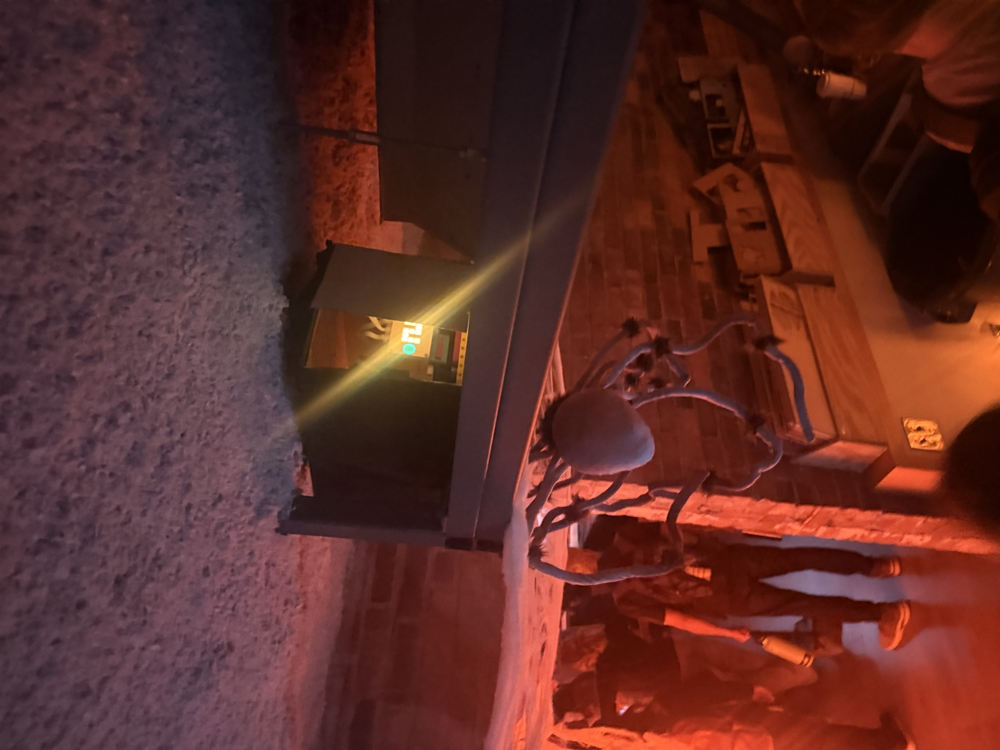
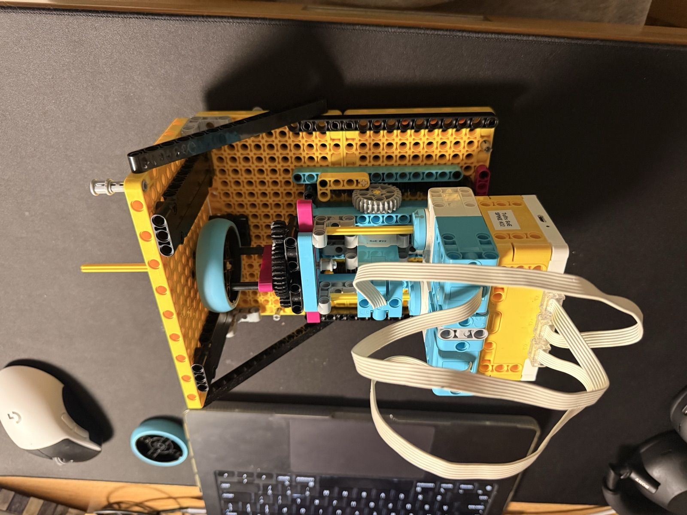
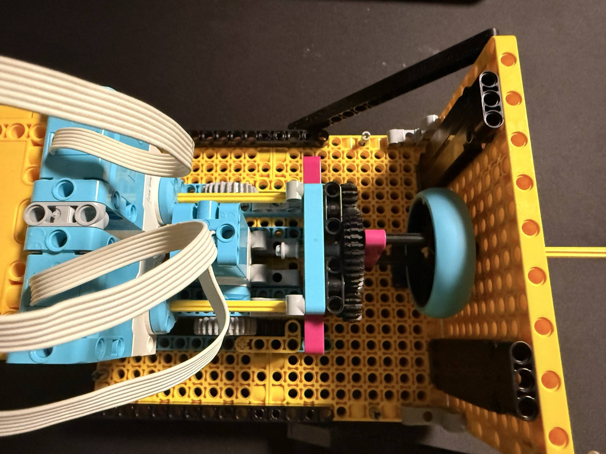
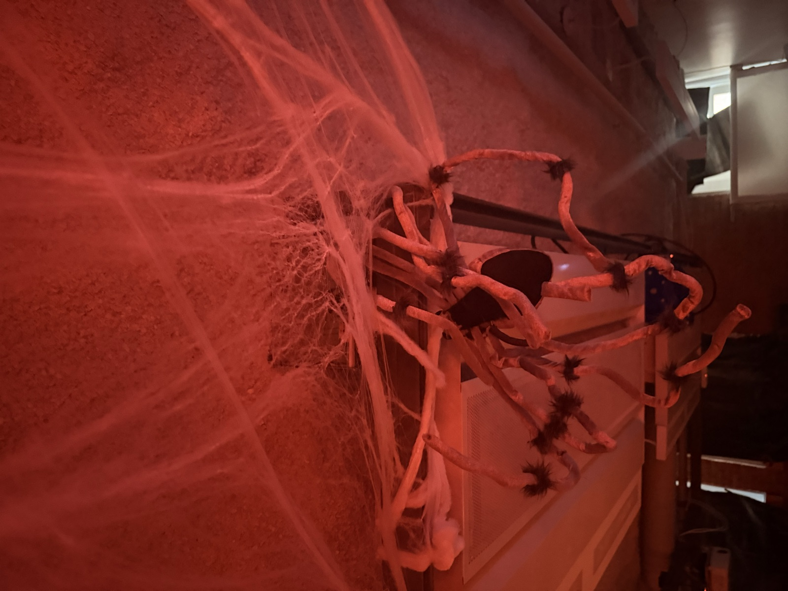

04 M — Sheet 15 / 15
Create an interactive Halloween haunted house feature.

The brief was an interactive feature for the haunted house. Mine is a giant spider that drops on people's heads, on a loop: wind it up to the ceiling, wait two minutes, let it free-fall into the walkway, wind it back up.
The release is the clutch idea I prototyped in Activity 4. Two motors wind the string onto a drum, eleven meters of it per cycle, which the program turns into about 87 spool turns. A third motor drives a little carriage the code calls the train: forward puts the winding drive in gear, backward takes it out, and with nothing holding the drum the spider just falls.


Between drops it waits at the top for two minutes, and the hub passes the wait counting down on its display: the minutes, then tens of seconds, then the last nine seconds one by one. You can see it glowing through the opening in the box.
The card's challenge asks how much of the mechanism you can hide, and that's what the box is for. Everything mechanical sits boxed up by the ceiling; the room gets the spider.

Still to add: the video, and how the night went.
# Setup: Medium roll-up motors on A and E; train motor on C.
from hub import port, light_matrix
import runloop
import motor
import motor_pair
TRAIN_SPEED = 100
TRAIN_TRAVEL_MS = 2000
ENGAGE_DEGREES = 180 # Half a rotation to push the detached C motor forward
ROLL_SPEED = 1110
E_TAKE_UP_DEGREES = 90
STRING_LENGTH_MM = 11000 # Your tested value
SPOOL_DIAMETER_MM = 40
WAIT_AT_TOP_MS = 120000 # Two minutes
# Countdown shown on the hub during the wait.
# Each entry: (text to show, seconds left when it appears)
COUNTDOWN = [
("2", 120), ("1", 60),
("50", 50), ("40", 40), ("30", 30), ("20", 20),
("9", 9), ("8", 8), ("7", 7), ("6", 6), ("5", 5),
("4", 4), ("3", 3), ("2", 2), ("1", 1),
]
async def engage_train():
# C starts detached: push it forward half a rotation.
# Negative velocity is C's tested forward direction.
await motor.run_for_degrees(port.C, ENGAGE_DEGREES, -TRAIN_SPEED)
async def move_train_forward():
# Negative is C's tested forward direction.
await motor.run_for_time(port.C, TRAIN_TRAVEL_MS, -TRAIN_SPEED)
async def take_up_e():
await motor.run_for_degrees(port.E, E_TAKE_UP_DEGREES, ROLL_SPEED)
async def roll_up_string(roll_degrees):
# Keep the tested A-forward, E-backward directions.
await motor_pair.move_tank_for_degrees(
motor_pair.PAIR_1, roll_degrees, ROLL_SPEED, -ROLL_SPEED
)
async def wait_at_top():
print("Waiting two minutes")
for i in range(len(COUNTDOWN)):
text, seconds_left = COUNTDOWN[i]
# Not awaited, so the scrolling text doesn't add extra time to the wait.
light_matrix.write(text)
if i + 1 < len(COUNTDOWN):
next_seconds_left = COUNTDOWN[i + 1][1]
else:
next_seconds_left = 0
await runloop.sleep_ms((seconds_left - next_seconds_left) * 1000)
light_matrix.clear()
async def drop_train():
# Dropping moves C only; A and E do not turn.
await motor.run_for_time(port.C, TRAIN_TRAVEL_MS, TRAIN_SPEED)
async def main():
# Keep the roll-up calculation from your tested program.
spool_circumference_mm = 3.14159 * SPOOL_DIAMETER_MM
roll_degrees = round(STRING_LENGTH_MM * 360 / spool_circumference_mm)
print("Roll-up degrees:", roll_degrees)
# C starts detached, so push it forward once before anything else.
await engage_train()
# E starts fully rolled out, so do its quarter-turn only once.
await take_up_e()
motor_pair.pair(motor_pair.PAIR_1, port.A, port.E)
while True:
await move_train_forward()
await roll_up_string(roll_degrees)
await wait_at_top()
await drop_train()
# This program runs indefinitely, so the pair remains in use.
runloop.run(main())